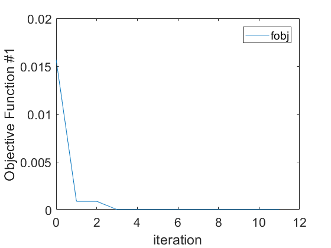
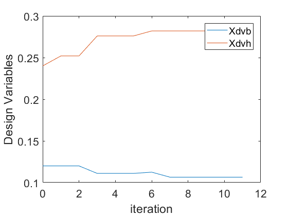

Tutorial Cantilever Beam Reliability Based Optimization
This tutorial shows how to perform a Reliability Based Optimization on a cantilever beam. The goal of this tutorial is to optimize a clamped beam under tip load considering uncertainties. The performance function is defined by the maximum allowable stress level minus the actual stress in a clamped beam. The documentation and the problem description of this example is available at: http://cossan.co.uk/wiki/index.php/Cantilever_Beam

Author: Edoardo Patelli, Institute for Risk and Uncertainty, University of Liverpool, UK
Contents
LICENSE
%{ This file is part of OpenCossan <https://cossan.co.uk>. Copyright (C) 2006-2018 COSSAN WORKING GROUP OpenCossan is free software: you can redistribute it and/or modify it under the terms of the GNU General Public License as published by the Free Software Foundation, either version 3 of the License or, (at your option) any later version. OpenCossan is distributed in the hope that it will be useful, but WITHOUT ANY WARRANTY; without even the implied warranty of MERCHANTABILITY or FITNESS FOR A PARTICULAR PURPOSE. See the GNU General Public License for more details. You should have received a copy of the GNU General Public License along with OpenCossan. If not, see <http://www.gnu.org/licenses/>. %}
Setup
This tutorial requires the Model constructed in the tutorial TutorialCantileverBeamMatlab.html
assert(logical(exist('XmodelBeamMatlab','var')),'openCOSSAN:Tutorial', ... 'Please run the tutorial TutorialCantileverBeamMatlabReliability first') % Set the verbosity level to 2 in order to silence evaluator output % messages. OpenCossan.setVerbosityLevel(2);
Definition of the Input: Design Variables
Define the DesignVariable objects
Xdvb = DesignVariable('value',0.12,'lowerBound',0.01,'upperBound',0.20,'Sdescription','Beam width'); Xdvh = DesignVariable('value',0.24,'lowerBound',0.02,'upperBound',0.4,'Sdescription','Beam Heigth');
Definition of the Input: Parameter
Define the target failure probability
XtargetPf = Parameter('value',1e-3','Sdescription','Target failure probability');
Definition of the Input: Input
Define Input object for OptimizationProblem
XinOptimization = Input('Sdescription','Test Input', ... 'CSmembers',{'Xdvb' 'Xdvh' 'XtargetPf'},'CXmember',{Xdvb Xdvh XtargetPf});
Definition of the Objective Function
The objective function is the minimization of the failure probability associated to the ProbabilisticModel defined above.
XobjFun = ObjectiveFunction('Sdescription','Minimize Pf',... 'Sscript','for n=1:length(Tinput), Toutput(n).fobj=(Tinput(n).XtargetPf-Tinput(n).pf)^2; end',... 'Cinputnames',{'XtargetPf' 'Xdvb' 'Xdvh' 'pf'},... 'Coutputnames',{'fobj'},'Liostructure',true);
Definition of the RBOproblem
The RBO problem is defined by combining a probabilistic model, a Simulations object used to estimate the failure probability, Objective function and Constraint, an Input containing Design Variables and finally a mapping between DesignVariable(s) and input(s) of the Probabilistic model.
The mapping between the Design Variable and Input of the Probabilistic model is done by means the field CdesignvariableMapping This field contains in the first column the name of the DesignVariables (Xdvh and Xdvb), in the second column the name of input in the Probabilistic Model (h and b) and the last column the specific property that has to be replace by the current value of the DesignVariable (the mean for the random variable h and the current value for the paramenter b.
XLS=LineSampling('Nlines',50,'Vset',1:2:12,'Vimportancedirection',[0.2 3]); XrboProblem = RBOProblem('Sdescription','RBO problem for Cantilever Beam', ... 'XprobabilisticModel',XprobModelBeamMatlab, ... 'Xsimulator',XLS, ... 'Xinput',XinOptimization, ... % input containing the Design Variable 'XobjectiveFunction',XobjFun,... 'SfailureProbabilityName','pf',... % Name of the failure probability 'CdesignvariableMapping',{'Xdvh' 'h' 'mean'; 'Xdvb' 'b' 'parametervalue'});
Reliability Based Optimization: Direct Approach
To perform RBO analysis using direct approch use the method optimize of the object RBOproblem. The method optimize requires as input an Optimizer object that defines the optimization algorithm to be used.
Xoptimum = XrboProblem.optimize('Xoptimizer',Simplex); % Display results display(Xoptimum)
[Status:SolutionSequence] * Simulation 1/1
Line: #18 all line in the negative domain. Try to reduce the value of Vset!
Line: #25 all line in the negative domain. Try to reduce the value of Vset!
Line: #34 all line in the negative domain. Try to reduce the value of Vset!
Line: #40 all line in the negative domain. Try to reduce the value of Vset!
Line: #47 all line in the negative domain. Try to reduce the value of Vset!
Iteration Func-count min f(x) Procedure
0 1 0.0156728
[Status:SolutionSequence] * Simulation 1/1
Line: #34 all line in the negative domain. Try to reduce the value of Vset!
Line: #35 all line in the negative domain. Try to reduce the value of Vset!
Line: #39 all line in the negative domain. Try to reduce the value of Vset!
Line: #40 all line in the negative domain. Try to reduce the value of Vset!
Line: #43 all line in the negative domain. Try to reduce the value of Vset!
[Status:SolutionSequence] * Simulation 1/1
Line: #50 all line in the negative domain. Try to reduce the value of Vset!
1 3 0.000866343 initial simplex
[Status:SolutionSequence] * Simulation 1/1
Line: #41 all line in the negative domain. Try to reduce the value of Vset!
Line: #48 all line in the negative domain. Try to reduce the value of Vset!
2 4 0.000866343 reflect
[Status:SolutionSequence] * Simulation 1/1
[Status:SolutionSequence] * Simulation 1/1
3 6 2.38019e-07 expand
[Status:SolutionSequence] * Simulation 1/1
4 7 2.38019e-07 reflect
[Status:SolutionSequence] * Simulation 1/1
[Status:SolutionSequence] * Simulation 1/1
5 9 2.38019e-07 contract outside
[Status:SolutionSequence] * Simulation 1/1
[Status:SolutionSequence] * Simulation 1/1
6 11 1.95174e-07 contract inside
[Status:SolutionSequence] * Simulation 1/1
[Status:SolutionSequence] * Simulation 1/1
7 13 1.00527e-07 reflect
[Status:SolutionSequence] * Simulation 1/1
[Status:SolutionSequence] * Simulation 1/1
[Status:SolutionSequence] * Simulation 1/1
[Status:SolutionSequence] * Simulation 1/1
8 17 1.00527e-07 shrink
[Status:SolutionSequence] * Simulation 1/1
[Status:SolutionSequence] * Simulation 1/1
9 19 1.00527e-07 contract outside
[Status:SolutionSequence] * Simulation 1/1
[Status:SolutionSequence] * Simulation 1/1
[Status:SolutionSequence] * Simulation 1/1
[Status:SolutionSequence] * Simulation 1/1
10 23 1.00527e-07 shrink
[Status:SolutionSequence] * Simulation 1/1
[Status:SolutionSequence] * Simulation 1/1
[Status:SolutionSequence] * Simulation 1/1
[Status:SolutionSequence] * Simulation 1/1
11 27 1.00527e-07 shrink
Optimization terminated:
the current x satisfies the termination criteria using OPTIONS.TolX of 1.000000e-03
and F(X) satisfies the convergence criteria using OPTIONS.TolFun of 1.000000e-06
Optimum Object - Description:
|- Design Variables: Xdvb Xdvh
|-- Values: 1.065e-01
|-- Values: 2.820e-01
|-- Objective function #1 at the optimum: 1.005e-07
|
|
|-- Evaluations of the objective function : 27
|-- Evaluations of the constraints : 0
|-- Evaluations of Phisical Model : 27
|-- Number of candidate solutions : 14
|-- Termination criterion : Converged to a solution
Total time: 2.1212 seconds
Plot results
f1 = Xoptimum.plotObjectiveFunction; f2 = Xoptimum.plotDesignVariable; Voptimum = Xoptimum.getOptimalDesign; 
Validation of Results
b = Parameter('value',Voptimum(1),'Sdescription','Beam width'); h = RandomVariable('Sdistribution','normal','mean',Voptimum(2),'std',0.01,'Sdescription','Beam Heigth'); % Definition of the Random Varibles P = RandomVariable('Sdistribution','lognormal','mean',5000,'std',400,'Sdescription','Load'); rho = RandomVariable('Sdistribution','lognormal','mean',600,'std',140,'Sdescription','density'); E = RandomVariable('Sdistribution','lognormal','mean',10e9,'std',1.6e9,'Sdescription','Young''s modulus'); % Redefine correlation Mcorrelation = eye(4); Mcorrelation(3,4) = 0.8; % Add correlation between rho and E Mcorrelation(4,3) = 0.8; % Redefine Random Variable Set Xrvset = RandomVariableSet('CXrandomVariables',{P h rho E},'CSmembers',{'P' 'h' 'rho' 'E'},'Mcorrelation',Mcorrelation); % Redefine Input XinputValidation = Input('CXmembers',{L b Xrvset I maxDisplacement},'CSmembers',{'L' 'b' 'Xrvset' 'I' 'maxDisplacement'}); % Redefine ProbModel XprobModelBeamMatlab.Xmodel.Xinput = XinputValidation; Xoptimum = XrboProblem.optimize('Xoptimizer',Simplex); % Compute Reference Solution Xmc = MonteCarlo('Nsamples',1e5,'Nbatches',1); % Run Reliability Analysis XfailireProbMC = Xmc.computeFailureProbability(XprobModelBeamMatlab); % Show the estimated failure probability display(XfailireProbMC);
[Status:SolutionSequence] * Simulation 1/1
Line: #25 all line in the negative domain. Try to reduce the value of Vset!
Line: #35 all line in the negative domain. Try to reduce the value of Vset!
Line: #38 all line in the negative domain. Try to reduce the value of Vset!
Line: #42 all line in the negative domain. Try to reduce the value of Vset!
Line: #43 all line in the negative domain. Try to reduce the value of Vset!
Line: #47 all line in the negative domain. Try to reduce the value of Vset!
Iteration Func-count min f(x) Procedure
0 1 0.0237205
[Status:SolutionSequence] * Simulation 1/1
Line: #41 all line in the negative domain. Try to reduce the value of Vset!
Line: #50 all line in the negative domain. Try to reduce the value of Vset!
[Status:SolutionSequence] * Simulation 1/1
Line: #48 all line in the negative domain. Try to reduce the value of Vset!
1 3 0.000825451 initial simplex
[Status:SolutionSequence] * Simulation 1/1
[Status:SolutionSequence] * Simulation 1/1
2 5 2.35508e-06 reflect
[Status:SolutionSequence] * Simulation 1/1
[Status:SolutionSequence] * Simulation 1/1
3 7 6.38339e-07 expand
[Status:SolutionSequence] * Simulation 1/1
4 8 6.38339e-07 reflect
[Status:SolutionSequence] * Simulation 1/1
[Status:SolutionSequence] * Simulation 1/1
5 10 6.38339e-07 contract outside
[Status:SolutionSequence] * Simulation 1/1
[Status:SolutionSequence] * Simulation 1/1
6 12 6.38339e-07 contract inside
[Status:SolutionSequence] * Simulation 1/1
[Status:SolutionSequence] * Simulation 1/1
7 14 1.14604e-07 expand
[Status:SolutionSequence] * Simulation 1/1
[Status:SolutionSequence] * Simulation 1/1
8 16 1.14604e-07 contract inside
[Status:SolutionSequence] * Simulation 1/1
9 17 1.14604e-07 reflect
[Status:SolutionSequence] * Simulation 1/1
[Status:SolutionSequence] * Simulation 1/1
[Status:SolutionSequence] * Simulation 1/1
[Status:SolutionSequence] * Simulation 1/1
10 21 1.14604e-07 shrink
[Status:SolutionSequence] * Simulation 1/1
[Status:SolutionSequence] * Simulation 1/1
11 23 2.86045e-08 reflect
[Status:SolutionSequence] * Simulation 1/1
[Status:SolutionSequence] * Simulation 1/1
[Status:SolutionSequence] * Simulation 1/1
[Status:SolutionSequence] * Simulation 1/1
12 27 6.25424e-09 shrink
[Status:SolutionSequence] * Simulation 1/1
[Status:SolutionSequence] * Simulation 1/1
[Status:SolutionSequence] * Simulation 1/1
[Status:SolutionSequence] * Simulation 1/1
13 31 6.25424e-09 shrink
[Status:SolutionSequence] * Simulation 1/1
14 32 6.25424e-09 reflect
[Status:SolutionSequence] * Simulation 1/1
[Status:SolutionSequence] * Simulation 1/1
[Status:SolutionSequence] * Simulation 1/1
[Status:SolutionSequence] * Simulation 1/1
15 36 6.25424e-09 shrink
Optimization terminated:
the current x satisfies the termination criteria using OPTIONS.TolX of 1.000000e-03
and F(X) satisfies the convergence criteria using OPTIONS.TolFun of 1.000000e-06
FailureProbability Object - Description:
* Results obtained with MonteCarlo method
** First Moment
*** Pfhat = 1.000e+00
*** Std = 0.000e+00
*** CoV = 0.000e+00
** Second Moment
*** variance = 0.000e+00
** Simulation details
*** # samples = 1.000e+05
*** # batches = 1
*** # lines = 0
*** Exit Flag = Maximum no. of samples reached. Samples computed 100000; Maximum allowed samples: 100000
Close figures
close(f1); close(f2);